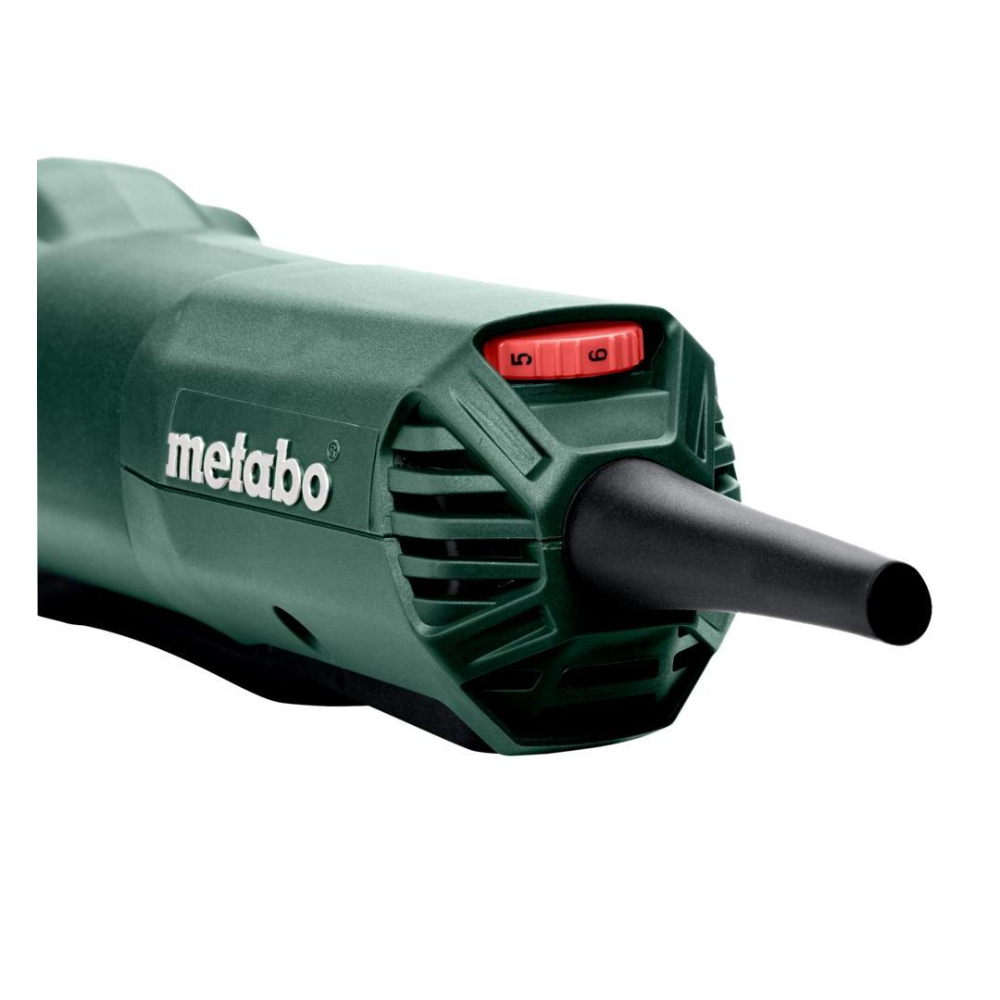
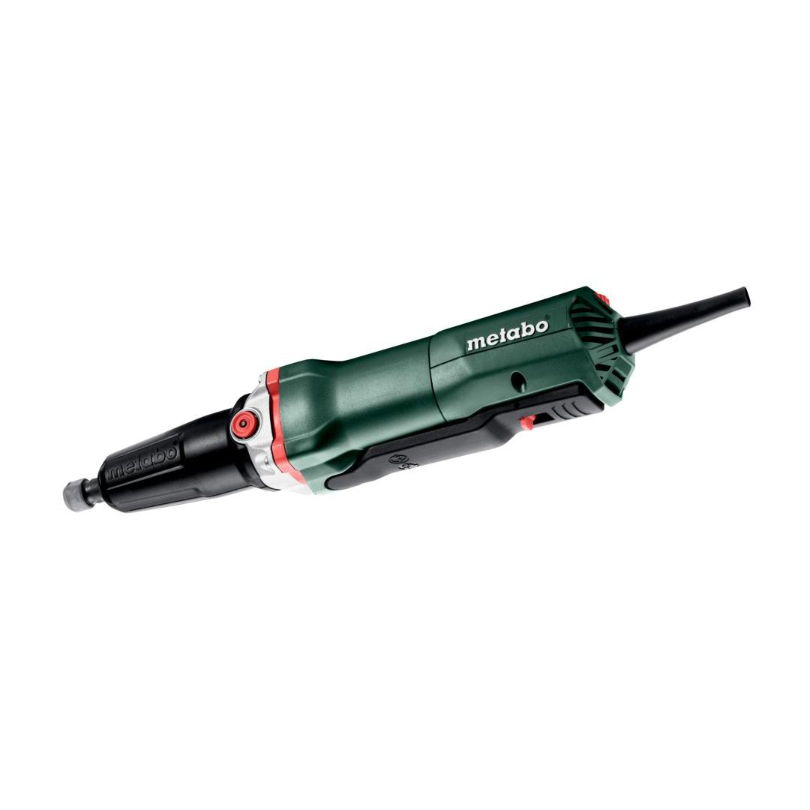
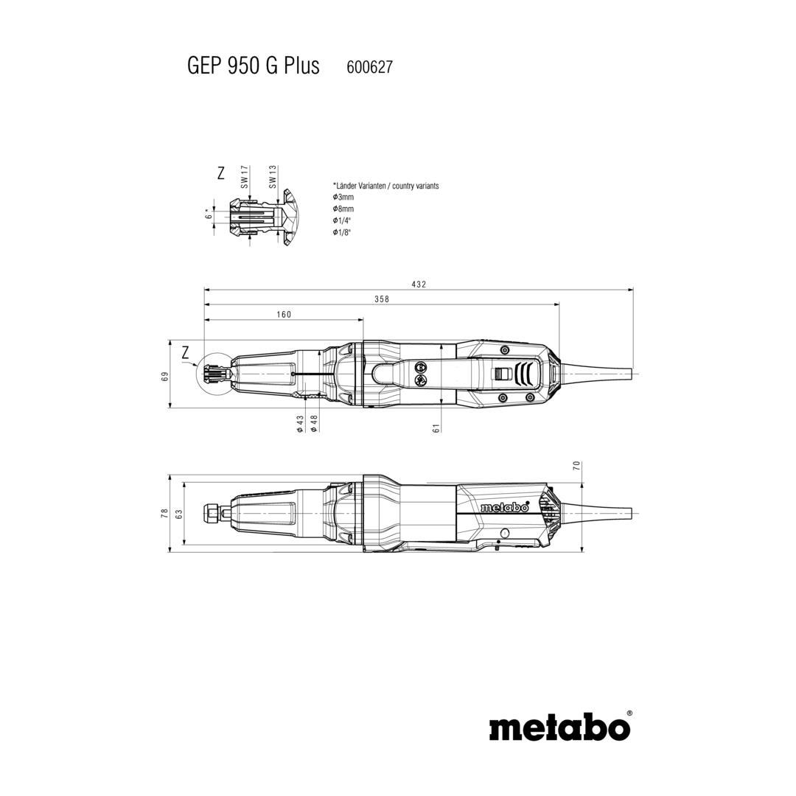
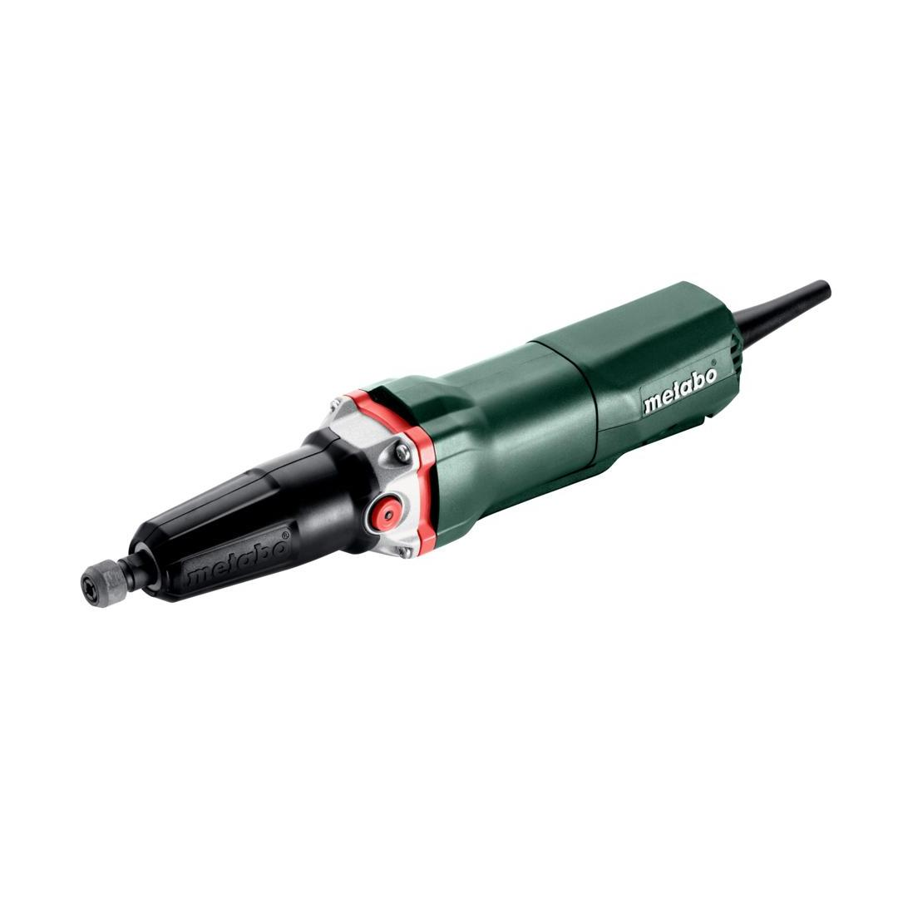

Metabo | Long Neck 2500 - 8700 rpm For Flap Wheels!
600627000





| No-load speed | 2500 - 8700 rpm |
| Rated input power | 950 W |
| Speed at rated load | 7200 rpm |
| Collet chuck bore | 6 mm / 1/4 " |
Product Description
- Powerful die grinder for demanding grinding applications with dead man function and long grinding spindle
- High torque and compact design thanks to robust planetary gear
- Paddle switch with deadmans function: safe to operate due to an ergonomically integrated non-slip switch
- Spindle lock for simple change of tools
- Aluminium die-cast bearing flange for long service life of the machine
- Vario-Constamatic (VC)- Electronics for work with materials requiring customised speeds, which remain almost constant under load
- Thumbwheel for Speed Preselection
- Electronic safety shutdown of the motor for safe working in case the tool stops unexpectedly
- Restart protection: prevents unintentional start-up after power supply interruption
- Electronic overload protection for long service life
- Precise collar for stationary use
- Removable protective rubber cap for comfortable and safe working
- Slim design for ideal handling
- Precision collet for precise concentricity
- Metabo Marathon motor with patented dust protection for long service life
- The specialist: handy grinder with especially high torque; ideal for grinding inner and outer surfaces in combination with flap wheels (see Accessories)
Product Highlights
Metabo Marathon-motorMetabo Marathon-motor
with patented dust protection for long service life
play video Vario-Constamatic (VC)-Full wave electronicsVario-Constamatic (VC)-Full wave electronics
for working at customised speeds to suit the application materials, and speeds that remain almost constant even under load
Restart protectionRestart protection
prevents unintentional start-up after power supply interruption
Paddle switch with dead man functionPaddle switch with dead man function
for high user safety
Technical Details
KEY FIGURES| No-load speed | 2500 - 8700 rpm |
| Rated input power | 950 W |
| Output power | 510 W |
| Speed at rated load | 7200 rpm |
| Collar diameter | 43 mm / 1 11/16 " |
| Collet chuck bore | 6 mm / 1/4 " |
| Weight (without power cable) | 1.7 kg / 3.7 lbs |
| Cable length | 4 m / 13 ft |
VIBRATION| Surface grinding (up to Ø 25 mm) | 2.5 m/s² |
| Uncertainty of measurement K | 1.5 m/s² |
| Surface grinding (up to Ø 50 mm) | 2.5 m/s² |
| Uncertainty of measurement K | 1.5 m/s² |
NOISE EMISSION| Sound pressure level | 90 dB(A) |
| Sound power level (LwA) | 98 dB(A) |
| Uncertainty of measurement K | 3 dB(A) |
Scope of delivery
| Collet 6 mm |
| Protective rubber cap |
| 1 Open-jawed spanner |